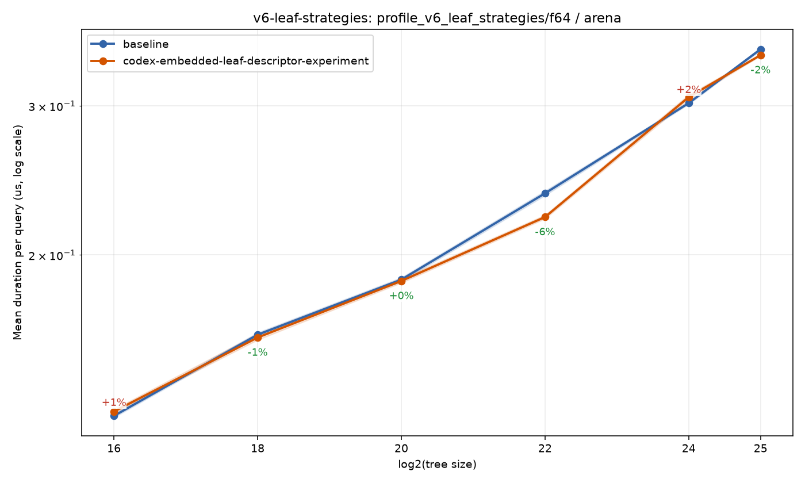
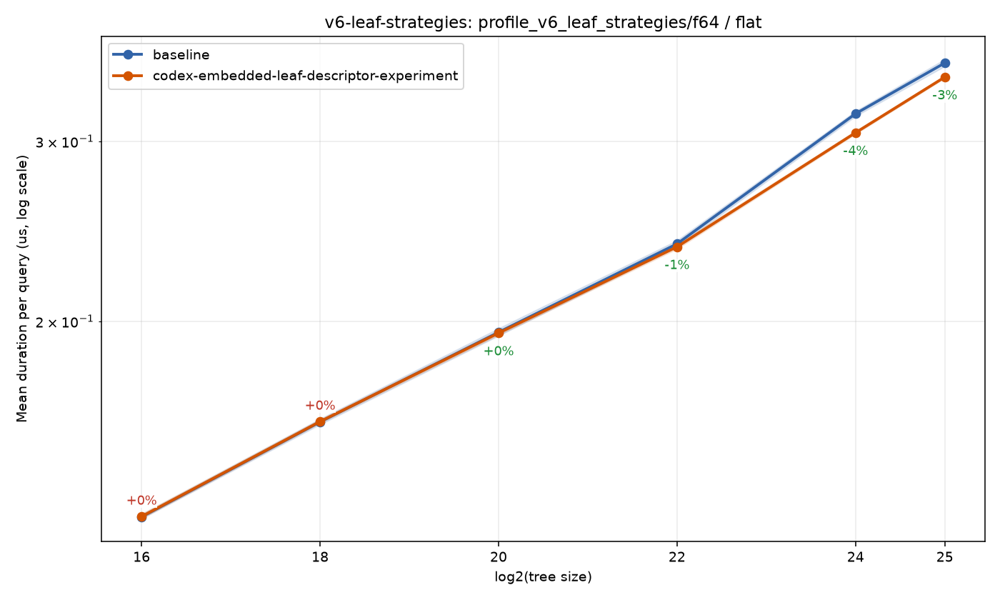
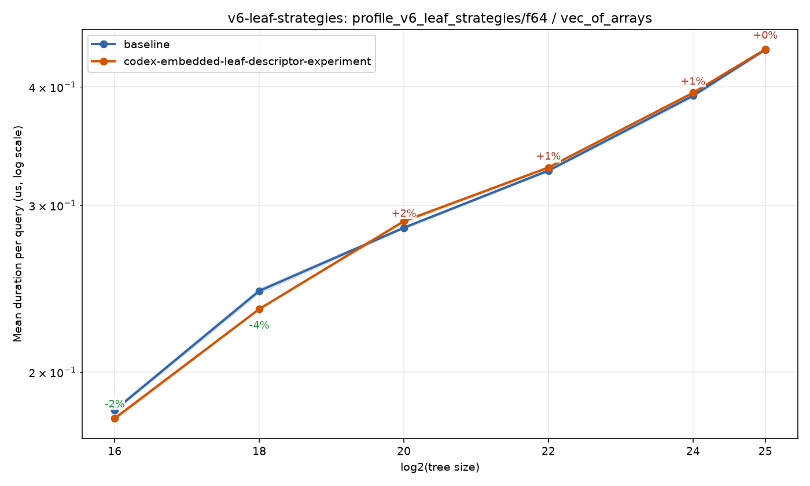

Home
Benchmark run: codex/embedded-leaf-descriptor-experiment
0efd65441bd67c32972c807a01adce478c6460dd · 2026-07-23T07:30:43Z
Benchmark suite: leaf
Branch comparison run
Compared against baseline run 20260723T004206Z-39cbbaf99876.
https://sdd-org.github.io/kiddo/v6/branches/codex-embedded-leaf-descriptor-experiment/history/20260723T073043Z-0efd65441bd6/index.html
bench_result-v6-leaf-strategies-f64-arena-codex-embedded-leaf-descriptor-experiment.png

bench_result-v6-leaf-strategies-f64-flat-codex-embedded-leaf-descriptor-experiment.png

bench_result-v6-leaf-strategies-f64-vec_of_arrays-codex-embedded-leaf-descriptor-experiment.png
